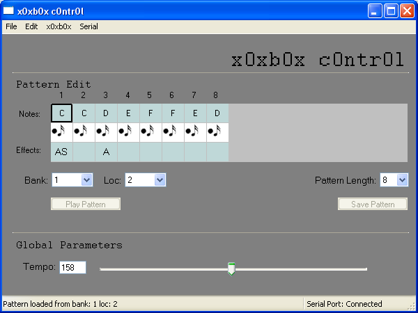
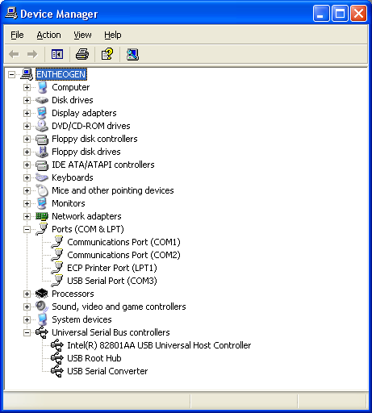

Screenshot

Downloading
You can get the software by downloading the package from sourceforge. Right now only the windows package is up. This will be fixed once I figure out how to make python executables for MacOS X. Linux people can grab the c0ntr0l code from CVS and install Python 2.4/wxPython/pySerial (instructions coming as soon as I get a linux box) Its huge because its really an entire Python/wxPython package wrapped up together with a 10kB python script.
Also make sure you have the most recent firmware uploaded (v1.03 right now). You can upload the firmware using the c0ntr0l software but you cant use it with the x0x otherwise. Second run x0xb0x (99->199) have 1.03 installed already.
Bootloading
- Turn on your x0x while it is in Bootload mode. You can't switch to this mode once its turned on so make sure the function knob is right.
- Plug in the USB cable into your PC
- Use the Hardware/Device manager (control panel) to verify that a USB serial port has been found:
 - Now double click on c0ntr0l.exe to start the c0ntr0l software
- Under Serial->Port select the right COM port (in this case, COM3)
- Select x0xb0x->Upload firmware.. and NOT "connect to x0xb0x"
- Find the firmware, press OK.
- Now quit the software.
- Restart the x0x in non-bootload mode (power-cycle) & follow use below
Using
- Turn on your x0x in non-bootload mode. Ironically, you don't have to be in Computer Control mode (yet...there may be special functions).
- Verify that the USB port was found (see image above)
- Select the correct port in Serial->Port
- Select Serial->Connect
- The tempo slider should adjust, and turning the tempo knob should change the slider and vice versa
- You can now read/write patterns from memory, back up the entire EEPROM (patterns & tracks), cut/paste patterns, rotate, etc.
- To load a pattern, select the bank/location in the dropdown menus
- To edit the loaded pattern, set the length with the drop down menu, then click on the top boxes and type in a note (a,b,c,d,e,f,g,h and A,C,D,F,G for sharps) click on the note symbol to change to a rest, and add accent (A), slide (S) and transpose up/down (U/D)
- Save a pattern by clicking on Save Pattern
- A lot of work still needs to be done
- Yes the interface kinda sucks right now.
- Please post bugs, suggestions, etc to the forum and the sourceforge bugtracking system. This will make my life easier. thanks!